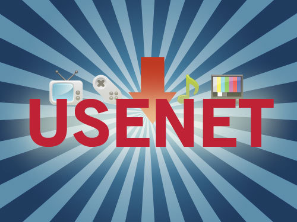

File Sharing
The WWW and the internet has come a long way in the way it shares content with devices all around the world. The first way of sharing content was by using a floppy disk but this was unable to share with the whole world. The first use of sharing files over the internet was with the XModem, created by Ward Christensen in 1977. Christensen developed a simple file transfer protocol and was largely used by the early BBSes as it was quick and effective. The use of the BBS system was the best and most effective way of file sharing at the time.
By the late 1970's Usenet was the new way to share files via the internet. The attraction to Usenet was that it could have files uploaded to its servers and then multiple copies could be made of a single file.
By 1993 Eugene Roshal had developed a way to compress these files so that they could be transferred at a much faster rate. These files were called Roshal ARchives, RAR for short.

Soon after a small private network of FTP websites called Topsites began. These sites featured unique content and rewarded users for uploading it. The use of RAR archives greatly improved the network. It was really hard to gain access to the content as you had to be invited to the private networks. These sites still exist today and feature high speed bandwidth with great storage capabilities.

1999 saw the creation of Napster. Napster was a free file sharing website that focused solely on sharing mp3 files. Shawn Fanning, creator of Napster, wanted to create an mp3 file sharing website with three main features. A search engine, file sharing and IRC (Internet Relay Chat). Napster saw the first use of Peer-to-peer (P2P) sharing. This system didn't store the files online, but instead used the different users to help distribute the content. The Napster client connected you to another user, via the central server, to download the requested song.
Watch the documentary to learn more about Napster
In 2001 BitTorrent was created by Bram Cohen and made the best file sharing software to date. The use of P2P sharing combined with unlimited content types makes BitTorrent so great.
In modern day the use of torrents is still at a high but use of file sharing sites like Megaupload, Mediafire and Rapidshare are popular too. These sites have files uploaded and stored on the server. Each file is then given its own unique URL and is shared with anyone. Use of forums is the most efficient way of sharing these links to files.